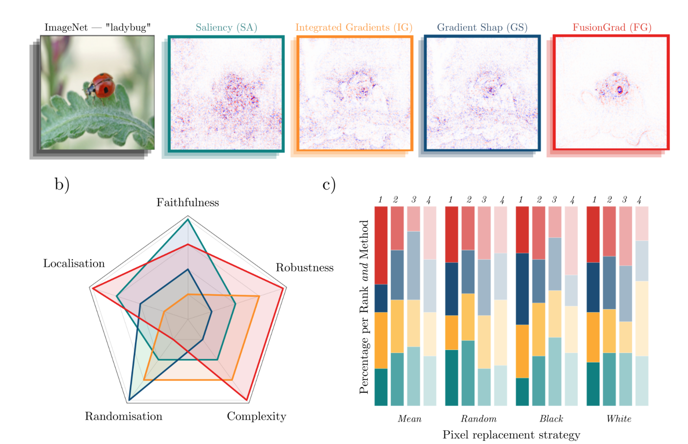
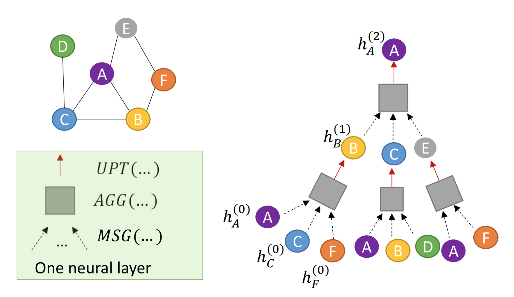
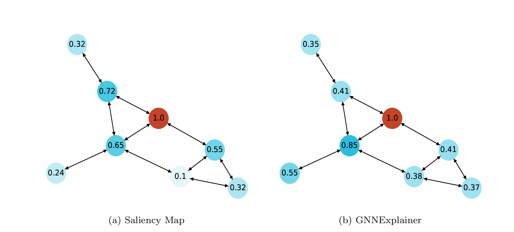
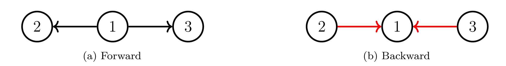
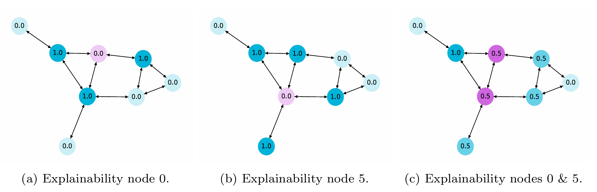
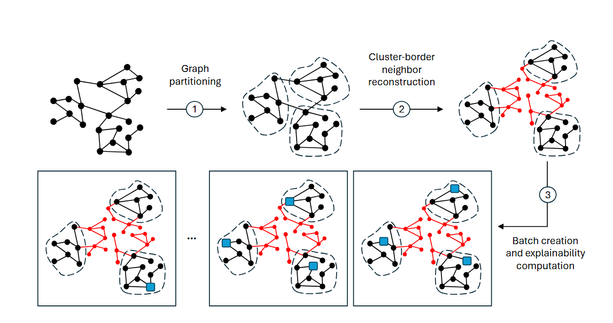
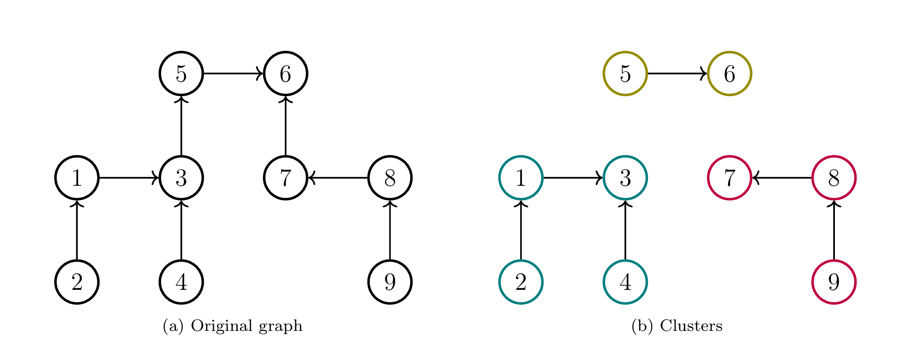
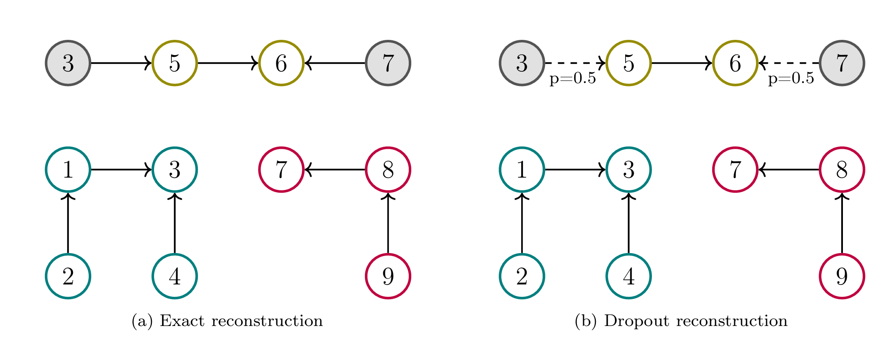
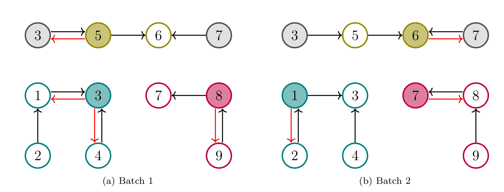
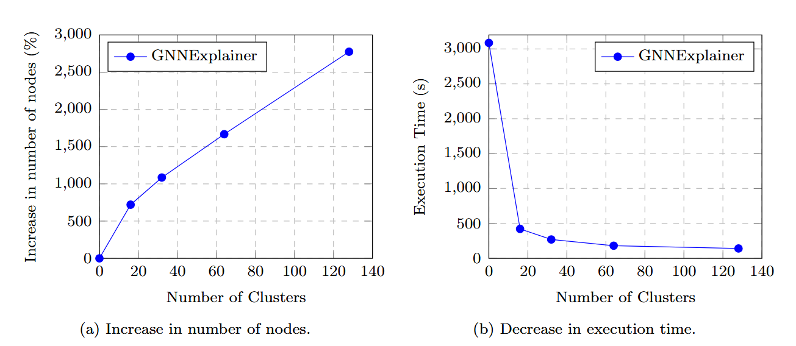

# Parallelizing Node-Level Explainability in Graph Neural Networks #### Oscar Llorente Gonzalez (ollorente@comillas.edu) --- ## Explainability in Deep Learning <p></p> --- ## What are Graph Neural Networks? <p></p> --- ## Explainability in Graph Neural Networks <p></p> --- ## What is Gradient Mixing? If a node is a neighbor or two other nodes, in the backward gradient coming from those nodes will be averaged. If your explanation depends on it, then it is contaminated. <p></p> --- ## Why XAI in a GNN cannot be parallelized? <p></p> --- ## Proposed Methodology <div class="multicolumn"> <div> <p></p> </div> <div> The proposed methodology to avoid XAI contamination has the following steps: - Graph partitioning. - Reconstruction of broken cluster-border neighbors. - Batch creation and explainability computation. </div> --- ## Graph Partitioning <p></p> --- ## Border Reconstruction <p></p> --- ## Batch Explainability <p></p> --- ## Results <p></p>